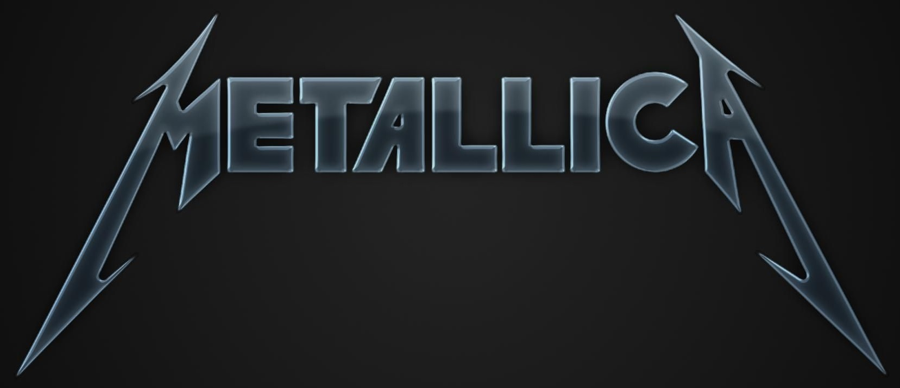

Metallica Tribute Page

The one and only, the great Metallica
-
November, 2016 - Metallica issue their 10th album, Hardwired... To Self-Destruct.
-
December 8, 2013 - Metallica play Antarctica as part of a promotion sponsored by Coca-Cola Zero. A documentary
and audio download of the event are later issued under the title Freeze 'Em All.
-
April 4, 2009 - At the Public Hall in Cleveland, Jeff Beck, Little Anthony & The Imperials, Metallica,
Run-DMC and Bobby Womack are inducted into the Rock and Roll Hall of Fame.
-
September 12, 2008 - Metallica release Death Magnetic, produced by Rick Rubin.
-
August 12, 2008 - Metallica release "The Day That Never Comes," the lead single from their ninth studio album, Death Magnetic.
-
June 5, 2003 - Metallica unleash their album St. Anger, with one of the harshest drum tones ever committed to tape.
-
May 6, 2001 - Metallica drummer Lars Ulrich and his wife Skylar have their second child, a son named Layne.
-
January 17, 2001 - Bass player Jason Newsted leaves Metallica.
-
July 11, 2000 - Metallica's battle against the peer-to-peer file sharing company Napster reaches the Senate
Judiciary Committee, where the band's drummer Lars Ulrich testifies, claiming copyright infringement.
-
May 12, 2000 - Following the launch of Metallica's legal case against the popular online file-sharing service
Napster, Chuck D of Public Enemy and Lars Ulrich of Metallica appear on The Charlie Rose Show, where they
debate whether MP3 downloading is a vehicle for piracy or a return of power to the people.
-
December 8, 1998 - Metallica release their live home video, Cunning Stunts, which was filmed at the Fort
Worth Convention Center, in Fort Worth, Texas, on May 9-10, 1997.
-
November 24, 1998 - The Metallica compilation of cover tunes, Garage, Inc., is released.
-
August 5, 1998 - Lars Ulrich of Metallica has his first child, a son named Myles.
-
November 18, 1997 - Metallica release ReLoad, their seventh studio album.
-
June 4, 1996 - Metallica release Load, their first album in five years.
-
May 23, 1996 - The video for Metallica's "Until It Sleeps" debuts, showing the band with short hair for the first time.
-
May 30, 1994 - Metallica start their S--t Hits the Sheds tour, with Danzig, Suicidal Tendencies and Candlebox
supporting. Alice in Chains is supposed to be one of the opening acts, but has to bow out due to Layne Staley's drug problem.
-
November 23, 1993 - Metallica release their first boxed set, Live S--t: Binge & Purge, which contains live
performances recorded on both their Damaged Justice tour and Wherever We May Roam tour.
-
March 27, 1993 - Kyuss begins a run of Australian tour dates opening for Metallica, during the latter group's
tour in support of The Black Album, at the Entertainment Centre in Sydney.
-
November 17, 1992 - Metallica release their two-part home video, A Year And A Half In The Life Of Metallica.
-
August 8, 1992 - Opening for Guns N' Roses at a show in Montreal, James Hetfield of Metallica is injured by
the pyrotechnics, which burn the entire left side of his body. Metallica can't continue, and Guns N' Roses
cut their set short after just 15 minutes when Axl Rose leaves the stage, upset over monitor problems. A near
riot ensues at Olympic Stadium as fans are not pleased.
-
October 29, 1991 - In Peoria, Illinois, Metallica launch their mammoth Wherever We May Roam tour, which
runs for 224 shows, wrapping up on December 18, 1992.
-
October 12, 1991 - The Day on the Green Festival takes place at Oakland Coliseum in Oakland,
California. Headlined by Metallica, the lineup also includes Queensrÿche, Faith No More and Soundgarden.
-
August 12, 1991 - Metallica release their fifth album, which is self-titled but commonly known as
The Black Album. It goes to #1 in eight countries, including America, where it sells 16 million copies.
-
July 30, 1991 - "Enter Sandman" is released as a single, serving as a preview of what's to come from
Metallica's Black Album. With a cover of the early Queen classic "Stone Cold Crazy" on the B-side,
it reaches #16 on the Hot 100, their best showing to this point.
-
June 6, 1989 - Metallica issue their second home video, 2 Of One, which is comprised of
two versions of their first music video, "One."
-
January 22, 1989 - Metallica's first music video, for "One," makes its debut. Running 7:44,
it incorporates footage from the 1971 war movie Johnny Got His Gun.
-
August 25, 1988 - Metallica issue their fourth studio album, ...And Justice For All,
featuring "One" and "To Live Is To Die."
-
November 17, 1987 - Metallica issue their first home video, Cliff 'Em All, which is
comprised of both fan-filmed and pro-shot live performances prior to bass player Cliff Burton's
death in a tour bus accident.
-
August 21, 1987 - Metallica release The $5.98 E.P.: Garage Days Re-Revisited.
-
August 20, 1987 - Metallica play a secret show at The 100 Club in London. Two days later,
they play Donington Park at Castle Donington as part of the massive Monsters of Rock Festival, headlined by Bon Jovi.
-
February 13, 1987 - Metallica conclude their breakthrough - yet tragic - Damage Inc. tour at
Frolundaborg in Gothenburg, Sweden. They drew huge crowds throughout the tour but lost bass
player Cliff Burton, who was killed when their tour bus slid off the road during an earlier stop in Sweden.
-
November 8, 1986 - At the Country Club in Los Angeles, California, Metallica play their
first show with bassist Jason Newsted, the replacement for Cliff Burton, who was killed in
a tour bus accident in September.
-
September 27, 1986 - Cliff Burton (Metallica's second bassist) dies in a bus crash
in Sweden during Metallica's Damage Inc. tour in support of the Master of Puppets album.
Burton, age 24, is asleep in his bunk when the bus skids off the road. He is thrown from
the window and crushed when the vehicle rolls over him.
-
September 26, 1986 - In Solna, Sweden, Metallica play their last show with bass player
Cliff Burton, who dies when the band's tour bus crashes on the way to the next stop. The
last song is "Blitzkrieg."
-
March 27, 1986 - In Valley Center, Kansas, Metallica join Ozzy Osbourne's Ultimate Sin tour as the opening act.
-
March 3, 1986 - Metallica release their second album, Master Of Puppets, featuring
an anthemic title track that becomes their most-played live song.
-
November 23, 1984 - Metallica release "Creeping Death," the only single from Ride The Lightning.
-
July 27, 1984 - Metallica release their second album, Ride The Lightning, via Megaforce
Records. It is reissued a short time later when they sign to Elektra Records.
-
January 20, 1984 - Metallica's second single, "Jump in the Fire," is released.
-
August 8, 1983- Metallica's first single, "Whiplash," is released via Megaforce Records.
-
July 27, 1983 - Metallica launch their Kill 'Em All For One tour (with co-headliners Raven) at the Royal Manor in New Brunswick, New Jersey.
-
July 25, 1983 - Metallica release their debut album, Kill 'Em All, three months after parting ways with guitarist Dave Mustaine.
-
April 11, 1983 - Dave Mustaine is kicked out of Metallica because of his drug and alcohol addictions.
Soon after, he forms Megadeth, which becomes one of the most successful metal bands of the era.
-
April 1, 1983 - Exodus guitarist Kirk Hammett gets a phone call from manager Mark Whitaker,
asking him to audition for Metallica. Hammett accepts, and several days later, is on a plane
to New York for his tryout.
-
March 5, 1983 - Cliff Burton plays his first show with Metallica, at the Stone in San Francisco, California.
-
March 14, 1982 - At Radio City in Anaheim, California, Metallica play their first-ever show. Their first song is "Hit The Lights."
-
October 23, 1964- Robert Trujillo (bassist for Metallica and Suicidal Tendencies) is born in Santa Monica, California.
-
December 26, 1963 - Lars Ulrich (drummer for Metallica) is born in Gentofte, Denmark. He becomes interested
in music after seeing Deep Purple in concert at age 9.
-
August 3, 1963 - James Hetfield of Metallica is born in Downey, California.
-
March 4, 1963 - Jason Newsted is born in Battle Creek, Michigan. He plays bass for Flotsam and Jetsam, Metallica and Voivod.
-
November 18, 1962 - Kirk Hammett (lead guitarist for Metallica) is born in San Francisco, California.
-
November 2, 1962 - Ron McGovney (original Metallica bassist) is born in Los Angeles, California. McGovney
can be heard on the first Metallica demos, Power Metal and No Life 'Til Leather.
"As iconic a a band as Metallica has become, I think sometimes we forget
just how raw they were in the beginning of their career, and to a 15-year-old
kid like me, it was just shattering, I mean it was beyond." - Corey Taylor
Learn more about Metallica